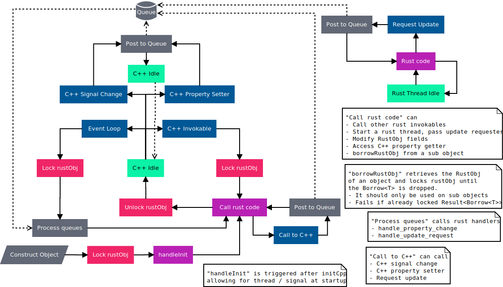
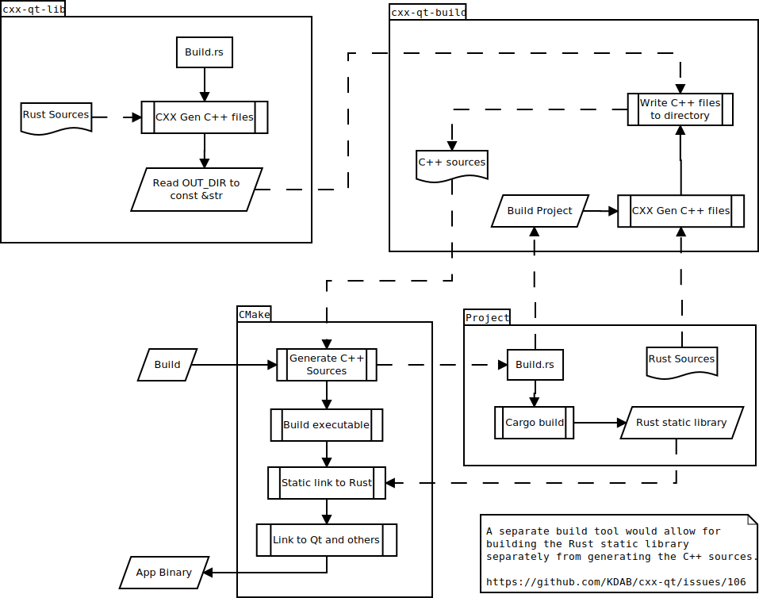

CXX-Qt - Safe interop between Rust and Qt
This library provides a safe mechanism for bridging between Qt code and Rust code in a different way to typical Rust Qt bindings.
We acknowledge that Qt code and Rust code have different idioms so cannot be directly wrap from one to another.
Instead of one-to-one bindings we use CXX to bridge between, this allows for normal Qt code and normal Rust code.
We feel this is more powerful than typical bindings as this allows us to provide a safe API and safe multi-threading between Qt and Rust.
To aid integration of Qt and Rust code we provide common Qt types for Rust which can pass across the bridge and provide ways to express common Qt idioms.
Through the use of macros and code generation as seen in the figure below, the developer describes a QObject with CXX-Qt macro annotations. Then CXX-Qt generates the C++ representation of the object and uses macro expansion to define the CXX bridge for the interop between C++ and Rust.

If you are new to CXX-Qt, we recommend you visit our Getting Started Guide.
To get detailed information on which features of a QObject are available in CXX-Qt, see the QObject chapter. Should you be interested in a deeper dive into the concepts of CXX-Qt, take a look at the concepts chapter, which explains the concepts CXX-Qt introduces in detail.
Note we only support 64-bit x86 Linux, but we plan on adding arm 64-bit, macOS, and Windows support in the future.
CXX-Qt - Getting Started
In comparison to other Qt-Rust-bindings, CXX-Qt does not aim to simply expose Qt functionality to Rust, but rather to completely integrate Rust into the Qt ecosystem.
In this guide we'll go through a minimal, but complete example that uses CXX-Qt to create your own QObject in Rust and integrate it with a small QML-based GUI. As CXX-Qt aims to integrate Rust into the existing Qt ecosystem, you should have basic knowledge of Qt and QML before attempting to follow this guide. If you're not familiar with Qt/QML yet, take a look at the Qt Getting started guide or the QML intro respectively.
During this getting-started guide we'll first take a look at how CXX-Qt integrates with Qt's object system to allow the definition of QObjects in Rust. Then we'll dive straight into practice and define our first QObject as a Rust module. Once we've done that, its time to expose the defined QObject to QML. Followed by actually defining our GUI using QML. And finally we integrate our code with CMake so we can build and run it.
Note we only support 64-bit x86 Linux, but we plan on adding arm 64-bit, macOS, and Windows support in the future.
So, without further ado - let's Get Started
QObjects in Rust
The right tool for the right job.
If you only have a hammer, every problem looks like a nail.
Don't bring a knife to a gun fight.
There are many bits of advice like that. With CXX-Qt, we aim to make it possible to use the right tool for each of the many jobs necessary to build a modern GUI application.
So what is in our toolbox for a typical Qt application?
- QML - A declarative, flexible, dynamically-typed, interpreted language that is purpose built to define reactive and beautiful GUI layouts and widgets with quick iteration speed.
- C++ - The traditional back-end of Qt - A fast, low-level language with a strong type system. C++ offers a rich ecosystem, many Qt-specific libraries and bare-metal performance. The cost when using C++ is that it is slow to develop, very error-prone and can easily lead to memory-issues, which can instantly crash your application and cause security issues.
Notably absent then is a back-end language that allows us to get rid of the issues C++ has and provides us with a safe way to write fast back-end code. This of course is where Rust comes in. Whilst Rust doesn't have quite as rich of an ecosystem, it is typically faster to develop than C++, with easy dependency management, and most importantly, safe memory access. Therefore it is an ideal candidate to replace C++ for writing the back-end business-logic code that feeds the GUI with data.
However, C++ as well as QML still have their place in Qt applications. For that reason Rust, C++, and QML should all be able to be used to complement each other. CXX-Qt aims to make it easy to integrate all three languages easily with each other, through the use of Qt's meta object system.
Qt's design is inherently object-oriented, which is true both for C++ and QML as well. Therefore, in order to integrate well with Qt, Rust needs to be able to extend the Qt object system with its own QObject subclasses and instances. This is exactly what CXX-Qt allows you to do.
As Rust doesn't offer classes with inheritance and polymorphism, CXX-Qt uses a Rust module when defining new QObject subclasses.
These CXX-Qt modules consist of multiple parts:
- A
Datastruct- Defines which Properties will be in the QObject subclass.
- Needs to implement the
Defaulttrait. - This data will live as properties in the C++ subclass that is generated by CXX-Qt.
- A
RustObjstruct- A normal Rust struct.
- One struct instance is created per class instance.
- Contains any Rust-only data.
- Needs to implement the
Defaulttrait.
- The
implof theRustObjstruct (optional):- Contains any Rust code.
- Functions marked with
#[invokable]will be callable from QML and C++.
CXX-Qt will then expand this Rust module into two separate parts:
- A C++ subclass of QObject with the same name as the module
- The Rust struct
RustObj

CXX-Qt also generates the code needed for interaction of the C++ QObject subclass and the RustObj struct using the CXX library.
For more details, see the Concepts: Bridge page.
Additionally, CXX-Qt wraps some Qt types for us, so they can be used easily by the Rust side.
See the Concepts: Qt Types page for the list of available types.
The important take away here is the duality of any subclass generated by CXX-Qt.
These classes are made up of the actual QObject subclass instance that exists purely on the C++ side, as well as an instance of the RustObj struct.
The lifetime and GUI data is therefore managed by the QObject instance on the C++ side.
Typically this will be instantiated by QML and the lifetime will be directly associated with the corresponding QML widget.
Any properties declared in the Data struct will be stored as a member of the C++ QObject.
However, the generated QObject subclass will defer to the RustObj struct for any behavior, which is then defined in Rust.
The RustObj struct can expose additional functionality with functions marked as #[invokable], which will generate a function on the C++ side that will directly call the appropriate Rust method.
These Rust methods can take a reference to the members of the C++ object via a wrapper called CppObj, so the Rust code can modify them.
Now that we have taken a look the theory of it all, lets jump in and write our first CXX-Qt module.
Our first CXX-Qt module
As with all things Rust, we'll first want to create a cargo project.
cargo new --lib qml-minimal
Note the --lib option here.
It is important that we create a static library in Rust, rather than an executable.
We'll discuss details of this later, when we integrate our Rust project with CMake.
As outlined in the previous section, to define a new QObject subclass, we'll need to create a Rust module.
So let's go into the src/lib.rs file.
We'll modify this file until it looks like this:
use cxx_qt::make_qobject;
#[make_qobject]
mod my_object {
#[derive(Default)]
pub struct Data {
number: i32,
string: String,
}
#[derive(Default)]
struct RustObj;
impl RustObj {
#[invokable]
fn increment_number(&self, cpp: &mut CppObj) {
cpp.set_number(cpp.number() + 1);
}
#[invokable]
fn say_hi(&self, string: &str, number: i32) {
println!(
"Hi from Rust! String is '{}' and number is {}",
string, number
);
}
}
}
This is a lot to take in, so let's go one step at a time. Starting with the module definition:
use cxx_qt::make_qobject;
#[make_qobject]
mod my_object {
Because we add the #[make_qobject] macro to the module definition, CXX-Qt will create a new QObject subclass from this module.
The new QObject subclass in our case will be named MyObject, as CXX-Qt automatically converts Rusts snake_case to the Qt default PascalCase.
CXX-Qt is all about idiomatic code in both Rust and C++, so it will do its best to keep styling consistent for C++ and Rust as well.
For the #[make_qobject] macro to work, we first need to define the data that will live in the new C++ object.
This is done with the Data struct:
#[derive(Default)]
pub struct Data {
number: i32,
string: String,
}
That means the newly created QObject subclass will have two properties as members: number and string. For names that contain multiple words, like my_number, CXX-Qt will again perform the snake_case to camelCase conversion to fit with C++/QML naming conventions.
Note that the data types we use here are normal Rust data types. CXX-Qt will automatically convert these types to their C++/Qt equivalent. In our case that means:
number: i32->int numberstring: String->QString string
For more details on the available types, see the Qt types page.
You might have also noticed the #[derive(Default)] here.
Currently the Data struct needs to always be default-constructable.
The data returned by the implementation of Default will be converted to the appropriate C++ types and assigned to the properties of any newly-constructed MyObject instance.
Alternatively, we could also provide our own Default implementation for Data.
Now that we've defined the data that will live on the C++ side of things, let's take a look at the Rust side:
#[derive(Default)]
struct RustObj;
In our case, this is just an empty struct.
However, the RustObj could contain any data we want.
It is not converted into a C++ class, so it isn't limited to the Qt-compatible types that the Data struct is.
An important point to note here is that the RustObj, like the Data struct must implement the Default trait.
Every instance of the MyObject class will automatically create a corresponding RustObj instance by using the Default trait.
Just because the RustObj struct doesn't contain any data, that still doesn't mean its not an important part of our MyObject class.
That is because it actually defines the behavior of our class through its impl:
impl RustObj {
#[invokable]
fn increment_number(&self, cpp: &mut CppObj) {
cpp.set_number(cpp.number() + 1);
}
#[invokable]
fn say_hi(&self, string: &str, number: i32) {
println!(
"Hi from Rust! String is '{}' and number is {}",
string, number
);
}
}
In our case, we define two new functions:
increment_number- Increments the number of the
MyObject. - As the number lives on the C++ side, it uses a
CppObjwrapper which is generated by CXX-Qt and has the appropriate setters and getters for each property. - The name will be converted to
incrementNumberin C++.
- Increments the number of the
say_hello- Prints a provided number and string.
- The name will be converted to
sayHelloin C++.
Both functions are marked with the #[invokable] macro, which means the functions will be added to the C++ code of MyObject and will be callable from QML as well.
Apart from functions marked with the #[invokable] macro, the RustObj impl is just a normal Rust struct impl and can contain normal Rust functions, which the invokable functions can call as usual.
And that's it. We've defined our first QObject subclass in Rust. That wasn't so hard, was it?
Now let's get to using it in Qt.
Exposing our QObject subclass to QML
After defining our first CXX-Qt module, we're ready to create our Qt application and export our new MyObject class to QML.
The easiest way to do this is to add a main.cpp file next to our lib.rs file in the src folder.
#include <QtGui/QGuiApplication>
#include <QtQml/QQmlApplicationEngine>
#include "cxx-qt-gen/include/my_object.h"
int
main(int argc, char* argv[])
{
QGuiApplication app(argc, argv);
QQmlApplicationEngine engine;
const QUrl url(QStringLiteral("qrc:/main.qml"));
QObject::connect(
&engine,
&QQmlApplicationEngine::objectCreated,
&app,
[url](QObject* obj, const QUrl& objUrl) {
if (!obj && url == objUrl)
QCoreApplication::exit(-1);
},
Qt::QueuedConnection);
qmlRegisterType<cxx_qt::my_object::MyObject>(
"com.kdab.cxx_qt.demo", 1, 0, "MyObject");
engine.load(url);
return app.exec();
}
This C++ file creates a basic Qt application and executes it. If you're unfamiliar with this, I recommend you take a look at the Qt documentation.
There are two notable changes compared to a normal Qt application though:
#include "cxx-qt-gen/include/my_object.h"
qmlRegisterType<cxx_qt::my_object::MyObject>(
"com.kdab.cxx_qt.demo", 1, 0, "MyObject");
For every QObject subclass that we define in Rust, CXX-Qt will generate a corresponding C++ class.
This class is included by the first code snippet.
They will always be in the cxx-qt-gen/include/ include path and use the snake_case naming convention.
The second code snippet then exports the class to QML.
This works the same as it would for any other QObject subclass, as that is exactly what MyObject is, as far as Qt is concerned.
The only thing to note here is that the class is generated in the cxx_qt::my_object namespace.
Where my_object is the name of the Rust module we defined earlier.
As we later want to include our QML GUI in a main.qml file inside the Qt resource system, we'll have to add a qml.qrc file in the src folder as well:
<RCC version="1.0">
<qresource prefix="/">
<file>main.qml</file>
</qresource>
</RCC>
And that's it. We can now use our cool new class from QML.
Creating our QML GUI
As noted in the QObjects in Rust chapter, we always want to use "the right tool for the right job". For a small modern GUI in Qt, that definitely means using QML. It's powerful, flexible, declarative, and allows us to iterate very quickly.
So let's add a main.qml next to our two other files in the src folder:
import QtQuick 2.12
import QtQuick.Controls 2.12
import QtQuick.Window 2.12
import com.kdab.cxx_qt.demo 1.0
Window {
height: 480
title: qsTr("Hello World")
visible: true
width: 640
MyObject {
id: myObject
number: 1
string: "My String with my number: " + myObject.number
}
Column {
anchors.fill: parent
anchors.margins: 10
spacing: 10
Label {
text: "Number: " + myObject.number
}
Label {
text: "String: " + myObject.string
}
Button {
text: "Increment Number"
onClicked: myObject.incrementNumber()
}
Button {
text: "Say Hi!"
onClicked: myObject.sayHi(myObject.string, myObject.number)
}
}
}
If you're not familiar with QML, I recommend you take a look at the Qt QML intro.
This code will create a pretty simple GUI that consists of two Labels and two Buttons.
The important part here is the use of the MyObject type.
As you can see, the class we defined earlier is now usable in QML.
As it is just another QObject subclass, it can be used in Qts property binding system, as is done with the myObject.string, which is bound to myObject.number.
The labels then simply display the data defined in the MyObject class.
We can use the two buttons to interact with the MyObject instance.
As you can see here, CXX-Qt has converted the snake_case of the function names to camelCase - incrementNumber and sayHi.
This way the MyObject doesn't seem at all out of place in QML.
It is again important to emphasize here that MyObject is just another QObject subclass and can be used just like any other QObject subclass.
The only difference being that any invokable functions that are defined are defined in Rust, instead of C++.
For QML, this doesn't make a difference though.
But enough of that, let's get this project building and running.
Building with CMake
- Disclaimer: The CMake integration for CXX-Qt is still work-in-progress.
- The current state is far from optimal and will likely improve a lot
- in the future, so don't be discouraged by anything in this chapter.
- Contributions are also welcome.
Before we can get started on building Qt with CMake, we first need to make our Cargo build ready for it.
If you've generated your project with the cargo new --lib command, your Cargo.toml likely looks something like this:
[package]
name = "qml-minimal"
version = "0.1.0"
edition = "2021"
[dependencies]
We'll have to do multiple things:
- Instruct cargo to create a static lib with a defined name ("rust") for CMake to link against.
- Add
cxx,cxx-qt, as well ascxx-qt-libas dependencies. - Add
clang-formatandcxx-qt-buildas build-dependencies.
In the end, your Cargo.toml should look similar to this (note that path for the dependencies is not required):
[package]
name = "qml-minimal"
version = "0.1.0"
authors = [
"Andrew Hayzen <andrew.hayzen@kdab.com>",
"Gerhard de Clercq <gerhard.declercq@kdab.com>",
"Leon Matthes <leon.matthes@kdab.com>"
]
edition = "2018"
license = "MIT OR Apache-2.0"
# This will instruct Cargo to create a static
# lib named "rust" which CMake can link against
[lib]
name = "rust"
crate-type = ["staticlib"]
[dependencies]
cxx = "1.0"
cxx-qt = { path = "../../cxx-qt" }
cxx-qt-lib = { path = "../../cxx-qt-lib" }
# cxx-qt needs to be able to generate C++ code at
# compile time, which is what cxx-qt-build is needed for.
# cxx-qt uses clang-format, if available, to format all
# C++ code in a consistent manner.
[build-dependencies]
clang-format = "0.1"
cxx-qt-build = { path = "../../cxx-qt-build" }
We'll then also need to add a script named build.rs next to our Cargo.toml:
use clang_format::ClangFormatStyle;
use cxx_qt_build::CxxQtBuilder;
fn main() {
CxxQtBuilder::new()
.cpp_format(ClangFormatStyle::Mozilla)
.file("src/lib.rs")
.build();
}
This is what generates the C++ code for our MyObject class at compile-time.
It will output the cxx-qt-gen/include/my_object.h file we included earlier in main.cpp.
Note that all Rust source files that uses the #[make_qobject] macro need to be included in this script!
In our case, this is only the src/lib.rs file.
Then we can write our CMakeLists.txt file:
cmake_minimum_required(VERSION 3.16)
project(example_qml_minimal)
set(APP_NAME ${PROJECT_NAME})
set(CMAKE_AUTOMOC ON)
set(CMAKE_AUTORCC ON)
set(CMAKE_CXX_STANDARD 17)
set(CMAKE_CXX_STANDARD_REQUIRED ON)
find_package(QT NAMES Qt6 Qt5 COMPONENTS Core Gui Qml QuickControls2 QmlImportScanner REQUIRED)
find_package(Qt${QT_VERSION_MAJOR} COMPONENTS Core Gui Qml QuickControls2 QmlImportScanner REQUIRED)
include(CxxQt)
# Generate C++ code from Rust using Cargo in the current folder
cxx_qt_generate_cpp(GEN_SOURCES)
# Define our sources
set(
CPP_SOURCES
${CMAKE_CURRENT_SOURCE_DIR}/src/main.cpp
)
set(
RESOURCES
${CMAKE_CURRENT_SOURCE_DIR}/src/qml.qrc
)
# Define our executable with our C++ source, generated sources, and QML resource files
add_executable(${APP_NAME} "${CPP_SOURCES}" "${GEN_SOURCES}" "${RESOURCES}")
# Include generated sources
cxx_qt_include(${APP_NAME})
# Link to generated rust library
cxx_qt_link_rustlib(${APP_NAME})
# Link to Qt in the normal way
target_link_libraries(${APP_NAME} PRIVATE
Qt${QT_VERSION_MAJOR}::Core
Qt${QT_VERSION_MAJOR}::Gui
Qt${QT_VERSION_MAJOR}::Qml
Qt${QT_VERSION_MAJOR}::QuickControls2
)
qt_import_qml_plugins(${APP_NAME})
This looks like a lot, but it is actually just a fairly standard CMake file for building a Qt application.
The difference here are these lines:
include(CxxQt)
# Generate C++ code from Rust using Cargo in the current folder
cxx_qt_generate_cpp(GEN_SOURCES)
# Include generated sources
cxx_qt_include(${APP_NAME})
# Link to generated rust library
cxx_qt_link_rustlib(${APP_NAME})
Which will do the code generation and include it into the C++ build.
An important thing to note here is that CMake must be able to resolve the call to include(CxxQt).
For this to work, you'll want to clone the CXX-Qt repository and add the CxxQt.cmake file to the CMAKE_MODULE_PATH CMake variable.
An easy way to achieve this is by using CMake's -D option.
For some alternatives, see the CMake concepts chapter.
Therefore building our project can be done like this:
$ mkdir build && cd build
$ cmake -DCMAKE_MODULE_PATH="<path-to-cxx-qt-repo>/cmake" ..
$ cmake --build .
If this fails for any reason, take a look at the examples/qml_minimal folder, which contains the complete example code.
This should now configure and compile our project. If this was successful, you can now run our little project.
$ ./qml_minimal
You should now see the two Labels that display the state of our MyObject, as well as the two buttons to call our two Rust functions.
Success 🥳
For further reading, you can take a look at the QObject chapter which goes into detail about all features that CXX-Qt exposes to new QObject subclasses. As well as the Concepts chapter, which explains the under concepts underlying CXX-Qt.
QObject
A QObject is constructed with the following parts
- A macro around the module
- A Data struct defining properties
- A RustObj defining invokables
- Cpp Object wrapper
- A Signals enum for defining signals
- Handlers on RustObj for processing events on the Qt thread
Macro
We define a module (which becomes our Qt object name) and then add make_qobject as a macro.
The example below would export the contents of the module as DataStructProperties to Qt / QML.
Note that the object name needs to be unique to avoid clashes, in the future full module paths may be used to aid avoiding collisions https://github.com/KDAB/cxx-qt/issues/19 - but this doesn't prevent attempting to register two QML types with the same name.
#[make_qobject]
mod data_struct_properties {
#[derive(Default)]
pub struct Data {
number: i32,
}
#[derive(Default)]
struct RustObj;
}
Note: this might change in the future to allow for defining the base class or options when exporting to QML and could become namespaced to #[cxx_qt(QObject)] ( https://github.com/KDAB/cxx-qt/issues/22 ).
Data Struct
The data struct defines which properties should exist on the QObject. It also allows you to provide initial values for the properties by implementing the Default trait.
Note that you can also use serde on the Data struct and derive Deserialize and Serialize, this then allows you deserialize and serialize the properties in the QObject.
#[make_qobject]
mod data_struct_properties {
#[derive(Default)]
pub struct Data {
number: i32,
}
#[derive(Default)]
struct RustObj;
}
Default
If you want to provide default values for your QObject, then instead of deriving implement the Default trait for the struct Data.
Property enum
An enum called Property is automatically generated from the names of the fields in the Data struct, this can then be used in the PropertyChangeHandler.
Deserialisation or Serialisation
Using Serde the Data struct can be (de)seralised, by adding the dervive attributes as normal.
To serialise an object from a Data struct to a string use serde as normal on Data struct instances, to obtain an instance of the Data struct from an invokable use the CppObj, eg Data::from(cpp); as shown in the as_json_str invokable below.
To deseralise an object from a string to a Data struct use serde as normal. The two main purposes for this are implementing Default for Data or using grab_values_from_data on the CppObj as seen in the grab_values method.
Note that Qt types cannot be (de)seralised yet ( https://github.com/KDAB/cxx-qt/issues/16 ).
#[make_qobject]
mod serialisation {
use serde::{Deserialize, Serialize};
#[derive(Deserialize, Serialize)]
pub struct Data {
number: i32,
string: String,
}
impl Default for Data {
fn default() -> Self {
let string = r#"{"number": 4, "string": "Hello World!"}"#;
serde_json::from_str(string).unwrap()
}
}
#[derive(Default)]
struct RustObj;
impl RustObj {
#[invokable]
fn as_json_str(&self, cpp: &mut CppObj) -> String {
let data = Data::from(cpp);
serde_json::to_string(&data).unwrap()
}
#[invokable]
fn grab_values(&self, cpp: &mut CppObj) {
let string = r#"{"number": 2, "string": "Goodbye!"}"#;
let data: Data = serde_json::from_str(string).unwrap();
cpp.grab_values_from_data(data);
}
}
}
RustObj Struct
The RustObj struct allows you to define the following items
- Invokable methods that are exposed to Qt
- Private methods and fields for RustObj to use (eg this is useful for storing the channels for threading)
- Mutate C++ state with
CppObj - Implement handlers for property or update requests
#[make_qobject]
pub mod rust_obj_invokables {
#[derive(Default)]
pub struct Data {
number: i32,
}
struct RustObj {
rust_only_field: i32,
}
impl Default for RustObj {
fn default() -> Self {
Self { rust_only_field: 1 }
}
}
impl RustObj {
#[invokable]
fn invokable_mutate_cpp(&self, cpp: &mut CppObj) {
cpp.set_number(cpp.number() * 2);
}
#[invokable]
fn invokable_return(&self) -> i32 {
self.rust_only_field
}
#[invokable]
fn invokable_multiply(&mut self, factor: i32) -> i32 {
self.rust_only_method(factor);
self.rust_only_field
}
fn rust_only_method(&mut self, factor: i32) {
self.rust_only_field *= factor;
}
}
}
Invokables
To define a method which is exposed to QML and C++, add a method on the RustObj struct and add the attribute #[invokable]. The parameters and return type are then matched to the Qt side. Also CXX-Qt automatically adds wrapper code around your invokable to automatically perform any conversion between the C++ and Rust types.
Note to access properties on the C++ object use Cpp Object.
Private Methods and Fields
Unlike the Data Struct fields which are defined on the RustObj struct are not exposed as properties to Qt. These can be considered as "private to Rust" fields, and are useful for storing channels for threading or internal information for the QObject.
Methods implemented on the RustObj that do not have an #[invokable] attribute are not exposed to C++ and are considered "private to Rust" methods. Similar to fields these are useful for threading and internal information.
Cpp Object
To access and mutate the C++ side, eg properties, we need a handle to access the C++ object. To do this safely CXX-Qt provides a CppObj type which is a safe wrapper around the generated C++ object.
Invokables
To use the CppObj add cpp: &mut CppObj to your parameters of an invokable.
If the Data struct has a field called number: i32, then you can access properties by using number(&self) -> i32 and set_number(&mut self, number: i32) on the CppObj.
#[invokable]
fn invokable_mutate_cpp(&self, cpp: &mut CppObj) {
cpp.set_number(cpp.number() * 2);
}
If there is a Signals enum then you can call emit_queued(&mut self, Signals) or unsafe emit_immediate(&mut self, Signals) on the CppObj to emit a signal.
Note that emit_immediate is unsafe as it can cause deadlocks if the Q_EMIT is Qt::DirectConnection connected to a Rust invokable on the same QObject that has caused the Q_EMIT, as this would then try to lock the RustObj which is already locked.
impl RustObj {
#[invokable]
fn invokable(&self, cpp: &mut CppObj) {
unsafe { cpp.emit_immediate(Signal::Ready); }
cpp.emit_queued(Signal::DataChanged { data: 1 });
}
}
Threading
The CppObj is used for threading to access the UpdateRequester via the update_requester(&self) -> cxx_qt_lib::update_requester::UpdateRequester method.
// Retrieve the update requester from the CppObj
let update_requester = cpp.update_requester();
The UpdateRequester is moved into the Rust thread, then when request_update(&self) -> bool is called it triggers the UpdateRequestHandler on the Qt thread.
// Request an update from the background thread
update_requester.request_update();
Deserialisation and serialisation
As described in the (de)serialisation section of the Data struct the CppObj has a grab_values_from_data for loading values from Data into the C++ instance.
#[invokable]
fn grab_values(&self, cpp: &mut CppObj) {
let string = r#"{"number": 2, "string": "Goodbye!"}"#;
let data: Data = serde_json::from_str(string).unwrap();
cpp.grab_values_from_data(data);
}
Type Wrappers
When using the getters or setters to access the C++ property values, the Rust getter and setter automatically perform any conversion between the C++ and Rust types. This allows for the Rust code to use the Rust representation of the types without needing to convert to or from the C++ type.
TODO: explain how we can use this for borrowRustObj later from a sub object etc (and note threading here) eg nested_object() could return Borrow<T>.
TODO: once we have borrow_rust_obj() explain how this can be used to reach another objects RustObj https://github.com/KDAB/cxx-qt/issues/30 ).
Signals enum
The signals enum defines which signals should exist on the QObject. It allows you to define the signal name and the parameters of the signal.
pub enum Signal {
Ready,
RustDataChanged { data: i32 },
TrivialDataChanged { trivial: QPoint },
OpaqueDataChanged { opaque: QVariant },
}
Emitting a signal
To emit a signal from Rust use the CppObj and call either the emit_queued(Signal) or unsafe emit_immediate(Signal) method.
Note that emit_immediate is unsafe as it can cause deadlocks if the Q_EMIT is Qt::DirectConnection connected to a Rust invokable on the same QObject that has caused the Q_EMIT, as this would then try to lock the RustObj which is already locked.
impl RustObj {
#[invokable]
fn invokable(&self, cpp: &mut CppObj) {
unsafe {
cpp.emit_immediate(Signal::Ready);
}
cpp.emit_queued(Signal::RustDataChanged { data: cpp.data() });
cpp.emit_queued(Signal::TrivialDataChanged {
trivial: *cpp.trivial(),
});
cpp.emit_queued(Signal::OpaqueDataChanged {
opaque: cpp.opaque(),
});
}
}
Handlers
Handlers are used to react to events on the Qt event loop thread. This allows Rust to react to events from C++, process triggers from background Rust threads on the Qt foreground thread, and avoid deadlocks.
The following handlers are available
- PropertyChangeHandler to handle when a property value has changed
- UpdateRequestHandler to process update requests on the Qt event loop thread, see threading for more info.
PropertyChangeHandler
When a property defined in the data struct is changed, either via Rust calling a setter or via QML / C++ calling a setter, we can be notified of this change by using the PropertyChangeHandler.
The example below listens to the number property and handle_property_change is triggered when the property number changes. It uses a Property enum which is automatically generated from the names of the properties defined in the data struct.
Note that this is called from the Qt event loop thread.
#[make_qobject]
mod handler_property_change {
#[derive(Default)]
pub struct Data {
number: i32,
}
#[derive(Default)]
struct RustObj {
count: u32,
}
impl RustObj {
#[invokable]
fn get_count(&self) -> u32 {
self.count
}
}
impl PropertyChangeHandler<CppObj<'_>, Property> for RustObj {
fn handle_property_change(&mut self, cpp: &mut CppObj, property: Property) {
match property {
Property::Number => {
println!("New Number: {}", cpp.number());
self.count += 1;
}
_others => {}
}
}
}
}
UpdateRequestHandler
When a background Rust thread uses an UpdateRequester to request the Qt thread to synchronise via calling request_update this triggers the handle_update_request method of the UpdateRequestHandler.
For example in an invokable the CppObj is used to retrieve an UpdateRequester.
// Retrieve the update requester from the CppObj
let update_requester = cpp.update_requester();
The UpdateRequester is moved into the thread, then when required an update is requested.
// Request an update from the background thread
update_requester.request_update();
This then triggers handle_update_request to be called at a later stage from the Qt event loop thread. Which can iterate over an event_queue (eg a channel from the background thread), to update the values into the Qt object (via process_event with the CppObj).
Note that this is called from the Qt event loop thread.
impl UpdateRequestHandler<CppObj<'_>> for RustObj {
fn handle_update_request(&mut self, cpp: &mut CppObj) {
while let Some(event) = self.event_queue.next().now_or_never() {
if let Some(event) = event {
self.process_event(&event, cpp);
}
}
}
}
Concepts
Basic Concepts
Build tooling
- Build.rs and Cargo.toml file
- CMake integration
- Register Types
- Exposing Rust objects as a QQmlExtensionPlugin
Advanced Concepts
Bridge
CXX-Qt uses CXX for bridging between C++ and Rust in a safe way.
CXX-Qt provides macros for declaring Qt objects such as QObject while still being idomatic Rust code.
We provide Qt types to help pass common data types across the bridge between Rust and Qt.
When Rust items are exposed to C++ we automatically perform a conversion between Snake case and Camel case. So that items (such as properties and invokables) appear as Camel case to C++ but Snake case to Rust.
Note that the Rust RustObj of a constructed Qt object is owned by the C++ side of the bridge representing it. So when the C++ object is destroyed the Rust object will be destroyed. In the future there will be handlers for executing Rust code from the (de)constructor of the C++ object https://github.com/KDAB/cxx-qt/issues/13.
Qt
Invokables
Invokables can be defined using the RustObj Struct, these will be exposed as methods on the C++ class with Q_INVOKABLE so that they are accessible for QML too.
Properties
Properties can be defined using the Data struct, these will be exposed as a getter and setter method, a changed signal, and a Q_PROPERTY on the C++ class and therefore as QML properties too.
Signals
Signals can be defined using the Signals enum, these will be exposed as Q_SIGNALS on the C++ class and therefore to QML as well.
Change events
You can listen to property changes via the handlers available in the RustObj Struct. These handlers are called from the Qt event loop thread to remain thread safe.
Types
Primitive Trivial Types
These types can be used for properties, parameters or return types in invokables, and parameters in signals without any conversion.
They appear as their normal types on both the C++ and Rust sides of the bridge.
| Rust Type | C++ Type |
|---|---|
| bool | bool |
| f32 | float |
| f64 | double |
| i8 | qint8 |
| i16 | qint16 |
| i32 | qint32 |
| u8 | quint8 |
| u16 | quint16 |
| u32 | quint32 |
TODO: Note that u64 / quint64 is not supported currently ( https://github.com/KDAB/cxx-qt/issues/36 ).
Custom Types
These types are custom and require special treatment when traversing the bridge, to assist with traversing the bridge we have provided helper types in the cxx_qt_lib crate.
Within these custom types there are two kinds to consider
- Trivial
- Opaque
Custom Trivial Types
Custom trivial types, like primitive trival types, can be used for properties, parameters or return types in invokables, and parameters in signals without any conversion.
On the rust side they appear as the cxx_qt_lib helper type.
Note that when they are used as a parameter type in invokables they should be passed as a reference, eg pointf: &QPointF, and when they are a property or return type they should be a value, eg QPointF.
| Rust Type | C++ Type |
|---|---|
| cxx_qt_lib::QDate | QDate |
| cxx_qt_lib::QPoint | QPoint |
| cxx_qt_lib::QPointF | QPointF |
| cxx_qt_lib::QRect | QRect |
| cxx_qt_lib::QRectF | QRectF |
| cxx_qt_lib::QTime | QTime |
Custom Opaque Types
Custom opaque types wrap a unique pointer to the C++ type, they are used in the same way as custom trivial types but CXX-Qt automatically writes wrappers to convert to and from a C++ unique pointer of the type to a Rust wrapper of the type.
On the rust side they appear as the cxx_qt_lib helper type.
Note that when they are used as a parameter type in invokables they should be passed as a reference, eg color: &QColor, and when they are a property or return type they should be a value, eg QColor. Also for strings &str should be used when passed as a reference and String when passed as a value.
| Rust Type | C++ Type |
|---|---|
| cxx_qt_lib::QColor | QColor |
| cxx_qt_lib::QDateTime | QDateTime |
| String or &str | QString |
| cxx_qt_lib::QUrl | QUrl |
| cxx_qt_lib::QVariant | QVariant |
An example of a QVariant as a parameter, return type, and property is shown below.
#[make_qobject]
mod types {
use cxx_qt_lib::{QVariant, QVariantValue};
pub struct Data {
variant: QVariant,
}
impl Default for Data {
fn default() -> Self {
Data {
variant: QVariant::from(1_i32),
}
}
}
#[derive(Default)]
struct RustObj;
impl RustObj {
#[invokable]
fn test_variant_property(&self, cpp: &mut CppObj) {
match cpp.variant().value() {
QVariantValue::Bool(b) => {
cpp.set_variant(QVariant::from(!b));
}
QVariantValue::I32(i) => {
cpp.set_variant(QVariant::from(i * 2));
}
_ => panic!("Incorrect variant type!"),
}
}
#[invokable]
fn test_variant_invokable(&self, variant: &QVariant) -> QVariant {
match variant.value() {
QVariantValue::Bool(b) => QVariant::from(!b),
QVariantValue::I32(i) => QVariant::from(i * 2),
_ => panic!("Incorrect variant type!"),
}
}
}
}
Future possible types
- Enums
- Lists
Build.rs
We need to specify a build.rs so that we can parse the macros and generate relevant C++ code.
The following options are available
- Indicating which files should be parsed to look for macros
- Enable building as a QQmlExtensionPlugin
- Deciding the clang-format style of the generated C++ code
- Specifiying a custom C++ namespace for the generated Rust types
A build.rs script could look like the following
use clang_format::ClangFormatStyle;
use cxx_qt_build::CxxQtBuilder;
fn main() {
CxxQtBuilder::new()
.cpp_format(ClangFormatStyle::Mozilla)
.file("src/lib.rs")
.build();
}
If you are registering as a plugin it could like the following
use clang_format::ClangFormatStyle;
use cxx_qt_build::CxxQtBuilder;
fn main() {
CxxQtBuilder::new()
.qqmlextensionplugin(
"com.kdab.cxx_qt.demo", // QML import name
"core_qmlplugin", // C++ library target name
)
.cpp_format(ClangFormatStyle::Mozilla)
.file("src/lib.rs")
.build();
}
A non-default C++ namespace could be like the following
Note that the namespace is a list, so vec!["a", "b", "c"] would become a::b::c
use clang_format::ClangFormatStyle;
use cxx_qt_build::CxxQtBuilder;
fn main() {
CxxQtBuilder::new()
.cpp_format(ClangFormatStyle::Mozilla)
.cpp_namespace_prefix(vec!["custom_namespace"])
.file("src/data_struct_properties.rs")
.file("src/empty.rs")
.file("src/handler_property_change.rs")
.file("src/lib.rs")
.file("src/mock_qt_types.rs")
.file("src/nested.rs")
.file("src/rust_obj_invokables.rs")
.file("src/serialisation.rs")
.file("src/signals.rs")
.file("src/sub.rs")
.file("src/types.rs")
.build();
}
Cargo.toml
The Cargo.toml file of your project needs minimal changes to work with CXX-Qt.
Firstly we currently need to build as a static library (as the Rust library is statically linked into the C++ executable or library).
[lib]
name = "rust"
crate-type = ["staticlib"]
Then the following dependencies are required for CXX-Qt to be used in the project.
[dependencies]
cxx = "1.0"
cxx-qt = { path = "../../cxx-qt" }
cxx-qt-lib = { path = "../../cxx-qt-lib" }
Finally the following build dependencies are required for the build.rs file to function.
[build-dependencies]
clang-format = "0.1"
cxx-qt-build = { path = "../../cxx-qt-build" }
Note that for the dependencies if you are using crates.io then you don't need the path parameter and can place the version as usual (eg cxx-qt = "0.3").
CMake
We need to add CMake to generate the C++ code and then link to it, ensure that CxxQt.cmake can be found by CMake.
For this to work, the CMAKE_MODULE_PATH CMake variable must be adapted to include the cmake folder in the CXX-Qt repository.
Some ways to achieve this include:
- Providing the
-DCMAKE_MODULE_PATH=<path-to-cxx-qt-repo>/cmakeoption when calling CMake. - Adding
list(APPEND CMAKE_MODULE_PATH "${CMAKE_CURRENT_LIST_DIR}/../cxx-qt/cmake")with the relative path to the CXX-Qt repository.- This option is especially useful if CXX-Qt is added as a git submodule to your project.
- Using a CMake GUI to change the variable
Then we have multiple phases to perform in the CMake
cxx_qt_generate_cpp- Uses the Cargo.toml file in the current directory
- Parses the Rust project generating relevant C++ code
- Lits the sources into
GEN_SOURCES
add_executable- Add the generated C++ sources to the executables as in a normal C++ project
cxx_qt_include- Adds any static sources from CXX-Qt and CXX that need to be in the include directories
cxx_qt_link_rustlib- Links the static Rust library to the given C++ target
include(CxxQt)
# Generate C++ code from Rust using Cargo in the current folder
cxx_qt_generate_cpp(GEN_SOURCES)
# Define our sources
set(
CPP_SOURCES
${CMAKE_CURRENT_SOURCE_DIR}/src/main.cpp
)
set(
RESOURCES
${CMAKE_CURRENT_SOURCE_DIR}/src/qml.qrc
)
# Define our executable with our C++ source, generated sources, and QML resource files
add_executable(${APP_NAME} "${CPP_SOURCES}" "${GEN_SOURCES}" "${RESOURCES}")
# Include generated sources
cxx_qt_include(${APP_NAME})
# Link to generated rust library
cxx_qt_link_rustlib(${APP_NAME})
# Link to Qt in the normal way
target_link_libraries(${APP_NAME} PRIVATE
Qt${QT_VERSION_MAJOR}::Core
Qt${QT_VERSION_MAJOR}::Gui
Qt${QT_VERSION_MAJOR}::Qml
Qt${QT_VERSION_MAJOR}::QuickControls2
)
qt_import_qml_plugins(${APP_NAME})
See the QQmlExtensionPlugin page for CMake differences when building a plugin.
C++ Registering QML types
There are two options for registering the generated QML types, either as a QQmlExtensionPlugin or registering the types to the engine.
Registering to the engine
If you are registering the types to the engine, firstly you include the generated objects (determined by the name of the Rust module).
#include "cxx-qt-gen/include/my_object.h"
Then you register the QML Type in the normal way.
qmlRegisterType<cxx_qt::my_object::MyObject>(
"com.kdab.cxx_qt.demo", 1, 0, "MyObject");
Note in the future there may be a helper to call which could register all the types even when not using a plugin ( https://github.com/KDAB/cxx-qt/issues/33 ).
Using QQmlExtensionPlugin
If you are using a QQmlExtensionPlugin then ensure the generated library is in the import path.
QQmlApplicationEngine engine;
// Add qml dir in runtime folder to QML import paths
engine.addImportPath(QDir(QCoreApplication::applicationDirPath())
.filePath(QStringLiteral("qml")));
QML
Once you have used either of the methods above for registering the types to the engine, then from QML you can include these like a normal C++ module.
import com.kdab.cxx_qt.demo 1.0
QQmlExtensionPlugin
Qt allows for plugins containing object definitions to be loaded at runtime from a directory instead of being embedded into the application.
This allows for a clean split between disciplines of business logic and GUI code.
CXX-Qt allows for generating a plugin and qmldir file so that you can load Rust objects as a plugin into your application.
When using QQmlExtensionPlugin the folder structure of your project may look like the following, you can see the clear split between "core" and "ui".
src/
- core/
- build.rs
- Cargo.toml
- CMakeLists.txt
- src/
- lib.rs
- ui/
- main.qml
- qml.qrc
CMakeLists.txt
main.cpp
Rust build.rs changes
In your build.rs specify that you want to use a QQmlExtensionPlugin by invoking the method qqmlextensionplugin as seen in the following example.
Here you specify the import name for QML and the name you are using for the resultant plugin target.
use clang_format::ClangFormatStyle;
use cxx_qt_build::CxxQtBuilder;
fn main() {
CxxQtBuilder::new()
.qqmlextensionplugin(
"com.kdab.cxx_qt.demo", // QML import name
"core_qmlplugin", // C++ library target name
)
.cpp_format(ClangFormatStyle::Mozilla)
.file("src/lib.rs")
.build();
}
CMake changes
The following example shows the CMake definition for building an extension plugin.
Note that the folder structure must match the QML import name, eg import foo.bar 1.0 means the folder structure of foo/bar is required that then contains the plugin and qmldir file.
include(CxxQt)
set(QML_IMPORT_DIR ${CMAKE_CURRENT_BINARY_DIR}/../qml)
# TODO: generate this path and name from the build.rs then our cmake helpers can read this from .txt
set(PLUGIN_OUTPUT_DIR ${QML_IMPORT_DIR}/com/kdab/cxx_qt/demo)
# Generate C++ code from Rust using Cargo in the current folder
cxx_qt_generate_cpp(GEN_SOURCES)
# Define our QML plugin library
add_library(core_qmlplugin SHARED "${GEN_SOURCES}")
# Set directory for our library
set_target_properties(core_qmlplugin PROPERTIES
LIBRARY_OUTPUT_DIRECTORY ${PLUGIN_OUTPUT_DIR}
)
# Include generated sources
cxx_qt_include(core_qmlplugin)
# Link to generated rust library
cxx_qt_link_rustlib(core_qmlplugin)
# Link to Qt libraries
target_link_libraries(core_qmlplugin PRIVATE
Qt${QT_VERSION_MAJOR}::Core
Qt${QT_VERSION_MAJOR}::Gui
Qt${QT_VERSION_MAJOR}::Qml
Qt${QT_VERSION_MAJOR}::QuickControls2
)
# Install the qmldir file into the plugin folder
configure_file(${CMAKE_CURRENT_SOURCE_DIR}/target/cxx-qt-gen/plugin/qmldir ${PLUGIN_OUTPUT_DIR}/qmldir COPYONLY)
Qt C++ changes
To load the plugin at runtime add the directory containing the plugin to the QML import path.
QQmlApplicationEngine engine;
// Add qml dir in runtime folder to QML import paths
engine.addImportPath(QDir(QCoreApplication::applicationDirPath())
.filePath(QStringLiteral("qml")));
Threading
Concept
The general concept for threading is that when Rust code is being executed a lock has been acquired on the C++ side to prevent Rust code being executed from multiple threads.
This means that Rust code, such as invokables and handlers, which are directly called from C++ are executed on the Qt thread.
We provide a solution to prevent entering deadlocks from signal connections, eg if a property change signal was connected to an invokable on the C++/QML side this wouldn't be able to acquire a lock if the property change was triggered from a Rust invokable. The solution is to post events to a queue which could cause deadlocks, eg signal emisson, these are then executed once the next event loop occurs, and crucially, after the lock from the Rust invokable is released.
If Rust code needs to listen to property changes, handlers can be implemented (eg PropertyChangeHandler) in the RustObj Handlers. These are called directly in the event loop from the Qt thread.

Multi threading
To achieve safe multi-threading on the Rust side we use an UpdateRequester. Where the Rust thread is started (eg an invokable) the UpdateRequester should be cloned into the thread.
Then when the background thread needs to update a value in the Qt object it requests an update, this is posted into the same queue as above. Once the event loop occurs this calls UpdateRequestHandler in the RustObj Handlers so that you can safely call setters or emit signals from the Qt thread and synchronise your state to the foreground.
We recommend using a channel in the thread to send enums or values which are then processed in UpdateRequestHandler.
Below is a complete Rust example of a multi-threaded object.
#[make_qobject]
mod website {
use futures::{
channel::mpsc::{UnboundedReceiver, UnboundedSender},
executor::block_on,
FutureExt, StreamExt,
};
use futures_timer::Delay;
use std::{
sync::atomic::{AtomicBool, Ordering},
thread,
time::Duration,
};
enum Event {
TitleArrived(String),
}
pub struct Data {
url: String,
title: String,
}
impl Default for Data {
fn default() -> Self {
Self {
url: "known".to_owned(),
title: "Press refresh to get a title...".to_owned(),
}
}
}
struct RustObj {
event_sender: UnboundedSender<Event>,
event_queue: UnboundedReceiver<Event>,
loading: AtomicBool,
}
impl Default for RustObj {
fn default() -> Self {
let (event_sender, event_queue) = futures::channel::mpsc::unbounded();
Self {
event_sender,
event_queue,
loading: AtomicBool::new(false),
}
}
}
impl RustObj {
#[invokable]
fn change_url(&self, cpp: &mut CppObj) {
let url = cpp.url();
let new_url = if url == "known" { "unknown" } else { "known" };
cpp.set_url(new_url);
}
#[invokable]
fn refresh_title(&self, cpp: &mut CppObj) {
// TODO: SeqCst is probably not the most efficient solution
let new_load =
self.loading
.compare_exchange(false, true, Ordering::SeqCst, Ordering::SeqCst);
if new_load.is_err() {
println!("Skipped refresh_title request, because already in progress.");
return;
}
cpp.set_title("Loading...");
let url = cpp.url();
// Retrieve the update requester from the CppObj
let update_requester = cpp.update_requester();
let event_sender = self.event_sender.clone();
let fetch_title = async move {
// Simulate the delay of a network request with a simple timer
Delay::new(Duration::from_secs(1)).await;
let title = if url == "known" {
"Known website"
} else {
"Unknown website"
};
event_sender
.unbounded_send(Event::TitleArrived(title.to_owned()))
.unwrap();
// Request an update from the background thread
update_requester.request_update();
};
thread::spawn(move || block_on(fetch_title));
}
fn process_event(&mut self, event: &Event, cpp: &mut CppObj) {
match event {
Event::TitleArrived(title) => {
cpp.set_title(title);
self.loading.store(false, Ordering::Relaxed);
}
}
}
}
impl UpdateRequestHandler<CppObj<'_>> for RustObj {
fn handle_update_request(&mut self, cpp: &mut CppObj) {
while let Some(event) = self.event_queue.next().now_or_never() {
if let Some(event) = event {
self.process_event(&event, cpp);
}
}
}
}
impl PropertyChangeHandler<CppObj<'_>, Property> for RustObj {
fn handle_property_change(&mut self, cpp: &mut CppObj, property: Property) {
match property {
Property::Url => self.refresh_title(cpp),
Property::Title => println!("title changed"),
_ => unreachable!(),
}
}
}
}
Nested Objects
Rust Qt objects can be nested as properties or parameters of each other.
A nested object is referred to by it's path relative to crate and then CppObj as the last segment. Eg crate::mymod::secondary_object::CppObj refers a mymod.rs which contains a module secondary_object with CXX-Qt macros.
To use this as a property in another object write secondary_object: crate::mymod::secondary_object::CppObj as the property.
For use as a parameter in an invokable write secondary_object: &mut crate::mymod::secondary_object::CppObj as the parameter. Then the secondary_object parameter can be used via the normal CppObj methods.
The following example shows a nested object as a property and parameter.
#[make_qobject]
mod nested {
#[derive(Default)]
pub struct Data {
nested: crate::rust_obj_invokables::rust_obj_invokables::CppObj,
}
#[derive(Default)]
struct RustObj;
impl RustObj {
#[invokable]
fn nested_parameter(
&self,
nested: &mut crate::rust_obj_invokables::rust_obj_invokables::CppObj,
) {
println!("Number: {}", nested.number());
// TODO: we can't reach the nested object's RustObj yet
// for this we will need `nested.borrow_rust_obj()` later
// https://github.com/KDAB/cxx-qt/issues/30
}
#[invokable]
fn nested_take_give(&self, cpp: &mut CppObj) {
// We now own the nested object and QML would be null
//
// TODO: should this return a OwnedCppObj which derefs to the CppObj ?
// (so that we don't need to do the CppObj::new(obj))
// and holds the UniquePtr internally so that OwnedCppObj can be moved back in the give ?
// https://github.com/KDAB/cxx-qt/issues/30
let mut nested = cpp.take_nested();
crate::rust_obj_invokables::rust_obj_invokables::CppObj::new(nested.pin_mut())
.set_number(10);
// The nested object is now back in QML
cpp.give_nested(nested);
}
}
}
Note that nested objects cannot be used as return types yet ( https://github.com/KDAB/cxx-qt/issues/66 ).
Note that nested objects are ignored from (de)serialisation ( https://github.com/KDAB/cxx-qt/issues/35 ).
Note that nested objects cannot be used in signals ( https://github.com/KDAB/cxx-qt/issues/73 ).
Note that we may allow for super:: to be used in the future ( https://github.com/KDAB/cxx-qt/issues/44 ).
TODO: once we have borrow_rust_obj() explain it's purpose of reaching the other objects RustObj https://github.com/KDAB/cxx-qt/issues/30 ).
Internal
Documentation related to internals of CXX-Qt.
Build
The process of building a CXX-Qt project internally is complex and contains multiple stages.
- CMake build is started, and triggers cargo build
- CXX-Qt build generates C++ sources and static library
- CMake builds the project C++ sources combined with generated sources
- CMake links the target to the Rust static library and Qt
1. Cargo build
When cargo build is triggered, this causes dependencies to be downloaded and built. One of these is
cxx-qt-lib which defines helper Qt types. It contains a build.rs which uses CXX to generate C++
sources for the Qt types. These are stored into a single JSON file in the OUT_DIR of the crate.
Note that we cannot know where the OUT_DIR or other files of cxx-qt-lib are, from the main
project, as they are in hashed directories. Therefore as cxx-qt-lib is built it uses include_str!
to expose the generated JSON into the QT_TYPES_CXX_JSON variable.
Next cargo triggers the build.rs of the main project, which executes cxx-qt-build helper methods.
2. CXX-Qt build
Firstly cxx-qt-build uses CXX to generate C++ sources for the project's Rust source files into a
well known location for CMake (target/cxx-qt-gen/).
Then cxx-qt-build writes any static headers (such as CXX headers) and QQmlExtensionPlugin
generated code to the same folder.
Next it uses the strings QT_TYPES_HEADER, QT_TYPES_SOURCE, and QT_TYPES_CXX_JSON (which
represents multiple files) from cxx-qt-lib to write the C++ source files into a well known
location for CMake (target/cxx-qt-lib/).
Finally it writes a list of the generated C++ sources into a cpp_sources.txt file in the
cxx-qt-gen folder.
Cargo now continues building the Rust project as normal, expanding macros and creating a static library.
3. CMake build
Now that Rust has completed, CMake reads the generated C++ sources and combines these with the projects C++ sources (any QML resources are also added at this stage).
This results in an executable target within CMake.
4. CMake link
Now that we have an executable target, we first link the target to the Rust static library from cargo. Then we link any external libraries, eg for threading, and then finally link to Qt.
This then results in CMake producing a binary which has Rust combined with the C++ application.
Future
In the future there are multiple improvements that we could like to make to the CMake build process.
- Split the CXX generation and Rust build into separate stages. Currently the configure stage of
CMake causes Rust to build. Instead create a CLI tool which simply generates C++ sources
for given Rust sources and writes them to a given location. Then this can be used to generate
the C++ sources and a normal cargo build can be used in the CMake build phase later
https://github.com/KDAB/cxx-qt/issues/106
- How will CMake know which Rust files to parse? It would be best if we can point it to a manifest and it could detect the Rust source files.
- What phase of the process will write the
cxx-qt-libfiles?
- Detect which libraries need linking from dependent crates. Eg if your Rust plugin uses diesel with the sqlite implementation, you need the final CMake target to link against https://github.com/KDAB/cxx-qt/issues/29
- Avoid collisions in naming in both the C++ includes https://github.com/KDAB/cxx-qt/issues/18
- Consider if we can expose generated sources in a way with works with Cargo workspaces.
At the moment multiple projects will collide with
target/cxx-qt-*https://github.com/KDAB/cxx-qt/pull/84
Diagram
An abstract diagram of the current flow can be seen below.
